TODO batch 41 — 20 attempts
12 valid without warnings; 8 blocked.
1. scoreboard — invalid
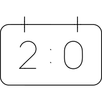
Both hanging tabs and the complete 2:0 score remain recognizable. Hangers, score glyphs, colon and panel are too close; manual repair required.
SVG · Folder · Validation
status: invalid
ERROR mic [panel]: parallel straight edges panel-2 and zero-2 are 5 apart on centerlines (ink gap 1); requires at least 8 centerline / 4 ink (midpoint-normal)
ERROR mic [two-bottom]: parallel straight edges two-bottom-2 and panel-4 are 7 apart on centerlines (ink gap 3); requires at least 8 centerline / 4 ink (midpoint-normal)
ERROR mic [hanger-0]: hanger-0 and two-top are 4.54427 apart on centerlines nearest (13, 17)<->(14.5833, 21.2595); SOLO48 requires at least 8 (ink clearance 4) unless the contact is declared with a scoped `connect` relationship
ERROR mic [hanger-1]: hanger-1 and zero are 4 apart on centerlines nearest (35, 17)<->(35, 21); SOLO48 requires at least 8 (ink clearance 4) unless the contact is declared with a scoped `connect` relationship
ERROR mic [two-top]: two-top and colon-0 are 5.05569 apart on centerlines nearest (19.9751, 24.5572)<->(25, 24); SOLO48 requires at least 8 (ink clearance 4) unless the contact is declared with a scoped `connect` relationship
ERROR mic [two-bottom]: two-bottom and colon-1 are 5.09902 apart on centerlines nearest (20, 33)<->(25, 32); SOLO48 requires at least 8 (ink clearance 4) unless the contact is declared with a scoped `connect` relationship
ERROR mic [colon-0]: colon-0 and zero are 6.04988 apart on centerlines nearest (25, 24)<->(31.0193, 24.6079); SOLO48 requires at least 8 (ink clearance 4) unless the contact is declared with a scoped `connect` relationship
ERROR mic [colon-1]: colon-1 and zero are 6.44034 apart on centerlines nearest (25, 32)<->(31.1722, 30.1611); SOLO48 requires at least 8 (ink clearance 4) unless the contact is declared with a scoped `connect` relationship
WARN mic [panel]: panel and colon-1 are 8 apart on centerlines nearest (25, 40)<->(25, 32); SOLO48 requires at least 8 (ink clearance 4) unless the contact is declared with a scoped `connect` relationship
2. scoreboard — invalid
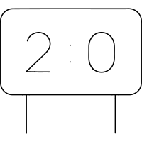
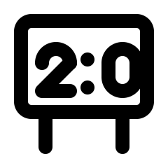
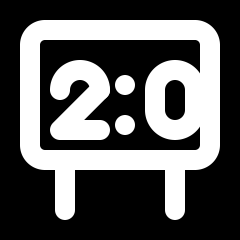
Both ground posts and the complete 2:0 score are retained. The zero crowds the right wall and glyph/colon clearances fail; manual repair required.
SVG · Folder · Validation
status: invalid
ERROR mic [panel]: parallel straight edges panel-2 and zero-2 are 3 apart on centerlines (ink gap -1); requires at least 8 centerline / 4 ink (midpoint-normal)
ERROR mic [two-bottom]: parallel straight edges two-bottom-2 and panel-4 are 6 apart on centerlines (ink gap 2); requires at least 8 centerline / 4 ink (midpoint-normal)
ERROR mic [panel]: panel and two-top are 6 apart on centerlines nearest (6, 18)<->(12, 18); SOLO48 requires at least 8 (ink clearance 4) unless the contact is declared with a scoped `connect` relationship
ERROR mic [panel]: panel and colon-1 are 7 apart on centerlines nearest (25, 32)<->(25, 25); SOLO48 requires at least 8 (ink clearance 4) unless the contact is declared with a scoped `connect` relationship
ERROR mic [panel]: panel and zero are 3 apart on centerlines nearest (42, 18)<->(39, 18); SOLO48 requires at least 8 (ink clearance 4) unless the contact is declared with a scoped `connect` relationship
ERROR mic [two-top]: two-top and colon-0 are 5.05569 apart on centerlines nearest (19.9751, 17.5572)<->(25, 17); SOLO48 requires at least 8 (ink clearance 4) unless the contact is declared with a scoped `connect` relationship
ERROR mic [two-bottom]: two-bottom and colon-1 are 5.09902 apart on centerlines nearest (20, 26)<->(25, 25); SOLO48 requires at least 8 (ink clearance 4) unless the contact is declared with a scoped `connect` relationship
ERROR mic [colon-0]: colon-0 and zero are 6.04988 apart on centerlines nearest (25, 17)<->(31.0193, 17.6079); SOLO48 requires at least 8 (ink clearance 4) unless the contact is declared with a scoped `connect` relationship
ERROR mic [colon-1]: colon-1 and zero are 6.44034 apart on centerlines nearest (25, 25)<->(31.1722, 23.1611); SOLO48 requires at least 8 (ink clearance 4) unless the contact is declared with a scoped `connect` relationship
3. screentone effect action text bubble — valid
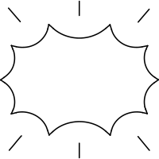
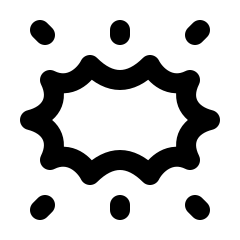
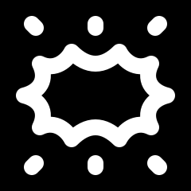
Concave action bubble and all six surrounding marks remain clear. The rays are short dash/dot-like marks at native size; symmetry and empty center are preserved.
SVG · Folder · Validation
status: valid
4. seal shape — valid
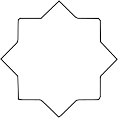
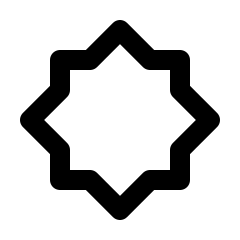
Eight cardinal/corner points remain balanced with consistent stepped shoulders. Deliberate sharp corners preserve the angular source seal.
SVG · Folder · Validation
status: valid
5. search bar — valid
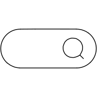
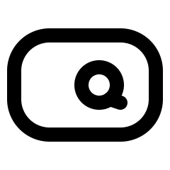
Rounded search field and right-hand magnifier remain clear. The handle is short and the field taller than the reference to preserve interior space.
SVG · Folder · Validation
status: valid
6. searching — valid
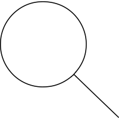
Round lens and lower-right handle remain clear at native size. The handle attaches to an exact point on the circular contour.
SVG · Folder · Validation
status: valid
7. seat find — valid
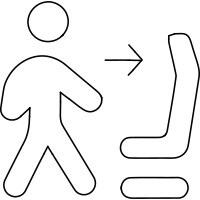
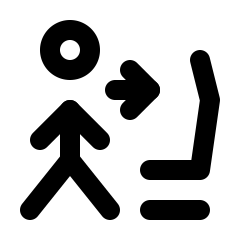
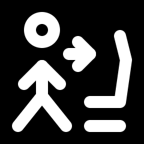
Walking person, direction arrow and chair remain separate. Outline thickness of the source chair and figure is reduced to strokes. Head-to-upper-torso gap is exactly 4 ink units.
SVG · Folder · Validation
status: valid
8. seeker — invalid
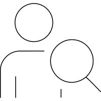
Head, shoulders, arm edge and foreground magnifier remain recognizable, but the lens intersects the shoulder and crowds head/torso details. Manual repair required. Human head-to-shoulder gap is exactly 4 ink units.
SVG · Folder · Validation
status: invalid
ERROR mic [arm-edge]: parallel straight edges arm-edge and body-side-1 are 6 apart on centerlines (ink gap 2); requires at least 8 centerline / 4 ink (midpoint-normal)
ERROR mic [head]: head and lens are 5.26121 apart on centerlines nearest (19.9832, 16.4865)<->(23.4683, 20.4279); SOLO48 requires at least 8 (ink clearance 4) unless the contact is declared with a scoped `connect` relationship
ERROR mic [body]: body and arm-edge are 5.99955 apart on centerlines nearest (6.0009, 33.9264)<->(12, 34); SOLO48 requires at least 8 (ink clearance 4) unless the contact is declared with a scoped `connect` relationship
ERROR mic [body-right]: body-right and lens are 2.16579 apart on centerlines nearest (28, 40)<->(28.347, 37.8622); SOLO48 requires at least 8 (ink clearance 4) unless the contact is declared with a scoped `connect` relationship
WARN mic [body]: body and lens are 0 apart on centerlines nearest (20.2025, 26)<->(20.2025, 26); SOLO48 requires at least 8 (ink clearance 4) unless the contact is declared with a scoped `connect` relationship
9. self driving car — invalid
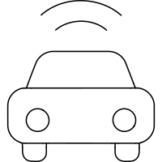
Car, two radio arcs, roof and paired lamps/wheels remain identifiable. Radio arcs and headlamps have insufficient clearance; manual repair required.
SVG · Folder · Validation
status: invalid
ERROR mic [body]: body and headlight-0 are 5 apart on centerlines nearest (14, 26)<->(14, 31); SOLO48 requires at least 8 (ink clearance 4) unless the contact is declared with a scoped `connect` relationship
ERROR mic [body]: body and headlight-1 are 5 apart on centerlines nearest (34, 26)<->(34, 31); SOLO48 requires at least 8 (ink clearance 4) unless the contact is declared with a scoped `connect` relationship
ERROR mic [roof]: roof and radio-inner are 4 apart on centerlines nearest (18, 18)<->(18, 14); SOLO48 requires at least 8 (ink clearance 4) unless the contact is declared with a scoped `connect` relationship
ERROR mic [radio-outer]: radio-outer and radio-inner are 4.99994 apart on centerlines nearest (24.0245, 6.00012)<->(24, 11); SOLO48 requires at least 8 (ink clearance 4) unless the contact is declared with a scoped `connect` relationship
10. self payment computer dollar — invalid
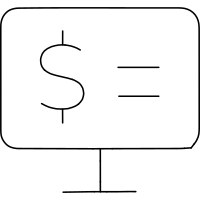
Dollar remains legible in the larger retained form. Compact glyph trial was rejected visually; vertical stem now still crowds the screen. Manual repair required.
SVG · Folder · Validation
status: invalid
ERROR mic [screen]: screen and dollar-stem are 5 apart on centerlines nearest (18, 6)<->(18, 11); SOLO48 requires at least 8 (ink clearance 4) unless the contact is declared with a scoped `connect` relationship
11. self payment computer euro — valid
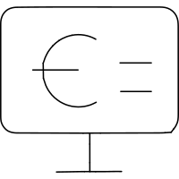
Euro and two right-hand rules remain legible in the common terminal. Currency height is reduced and screen corners use round joins; numeric clearance passes.
SVG · Folder · Validation
status: valid
12. self payment computer pound — invalid
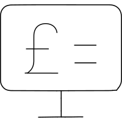
Pound remains legible in the larger retained form. Compact trial was rejected visually; foot and turning stroke crowd the lower screen edge. Manual repair required.
SVG · Folder · Validation
status: invalid
ERROR mic [pound-base]: parallel straight edges pound-base-1 and screen-4, screen-3 are 5 apart on centerlines (ink gap 1); requires at least 8 centerline / 4 ink (midpoint-normal)
ERROR mic [screen]: screen and pound-turn are 5 apart on centerlines nearest (12, 34)<->(12, 29); SOLO48 requires at least 8 (ink clearance 4) unless the contact is declared with a scoped `connect` relationship
13. self payment computer yuan — valid
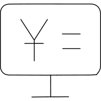
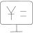
Yuan branching stroke, single currency bar, two rules and terminal remain recognizable. Glyph height and menu rules are reduced to open screen clearance.
SVG · Folder · Validation
status: valid
14. semicolon — valid
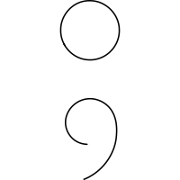
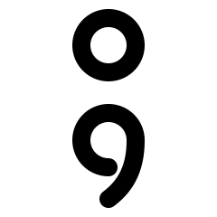
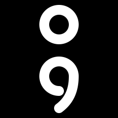

Circular dot and open comma preserve the semicolon. Comma quarters join continuously into a smooth descending tail; the narrow glyph fits the radial keyshape.
SVG · Folder · Validation
status: valid
15. send back — valid
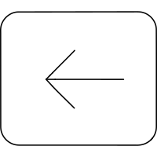
Left arrow remains centered within the rounded square, with clear interior space and equal chevron arms.
SVG · Folder · Validation
status: valid
16. send backward — valid
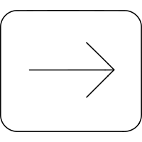
Right arrow mirrors the left version and preserves the actual supplied picture despite the backward filename.
SVG · Folder · Validation
status: valid
17. sense of stability — invalid
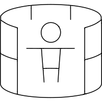
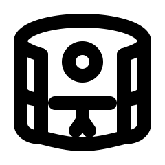
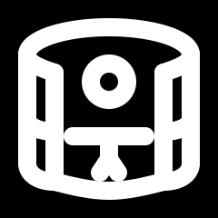
Open-front cylinder, side bands and outstretched figure remain present. Cylinder wall/window gaps and legs near the lower rim are crowded; manual repair required. Human head/torso gap itself is exactly 4 ink units.
SVG · Folder · Validation
status: invalid
ERROR mic [wall-right]: parallel straight edges wall-right-1, wall-right-2 and window-right-1, window-right-2 are 6 apart on centerlines (ink gap 2); requires at least 8 centerline / 4 ink (midpoint-normal)
ERROR mic [window-left]: parallel straight edges window-left-1, window-left-2 and wall-left-1, wall-left-2 are 6 apart on centerlines (ink gap 2); requires at least 8 centerline / 4 ink (midpoint-normal)
ERROR mic [bottom]: bottom and legs are 3.9077 apart on centerlines nearest (21.645, 41.8915)<->(22, 38); SOLO48 requires at least 8 (ink clearance 4) unless the contact is declared with a scoped `connect` relationship
WARN mic [rim-top]: rim-top and head are 7.99998 apart on centerlines nearest (24.0164, 6.00003)<->(24, 14); SOLO48 requires at least 8 (ink clearance 4) unless the contact is declared with a scoped `connect` relationship
18. seo search eye — invalid
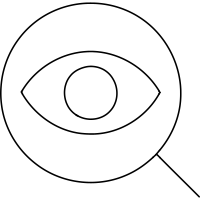
Eye lens, iris, magnifying ring and handle remain identifiable, but the nested eye boundaries are heavily crowded. Manual repair required.
SVG · Folder · Validation
status: invalid
ERROR mic [lens]: lens and eye are 3.99985 apart on centerlines nearest (6.0003, 21.0346)<->(10, 21); SOLO48 requires at least 8 (ink clearance 4) unless the contact is declared with a scoped `connect` relationship
ERROR mic [eye]: eye and iris are 2.74989 apart on centerlines nearest (20.9758, 27.7498)<->(21, 25); SOLO48 requires at least 8 (ink clearance 4) unless the contact is declared with a scoped `connect` relationship
19. serif text character — valid
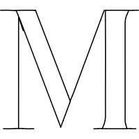
Serif M retains both upright stems, deep central point and four terminal serifs. Source double outlines are reduced to a single-stroke letter; the character remains clear.
SVG · Folder · Validation
status: valid
20. service system — valid
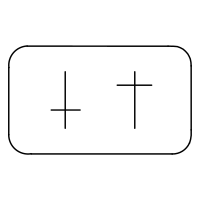
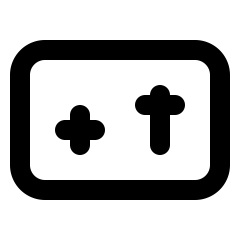
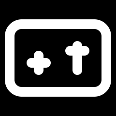
Two offset crosses remain visible inside the rounded panel. The right cross has a taller lower stem, while its upper arm is deliberately short at native size.
SVG · Folder · Validation
status: valid
{kind=link}
{kind=link}
{kind=link}
{kind=link}
{kind=link}
{kind=link}
{kind=link}
{kind=link}
{kind=link}
{kind=link}
{kind=link}
{kind=link}
{kind=link}
{kind=link}
{kind=link}
{kind=link}
{kind=link}
{kind=link}
{kind=link}
{kind=link}